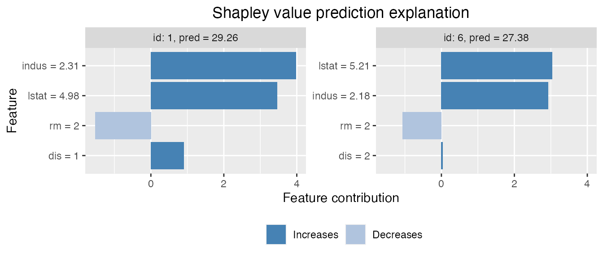

The Kernel SHAP Method
Assume a predictive model \(f(\boldsymbol{x})\) for a response value \(y\) with features \(\boldsymbol{x}\in \mathbb{R}^M\), trained on a training set, and that we want to explain the predictions for new sets of data. This may be done using ideas from cooperative game theory, letting a single prediction take the place of the game being played and the features the place of the players. Letting \(N\) denote the set of all \(M\) players, and \(S \subseteq N\) be a subset of \(|S|\) players, the “contribution” function \(v(S)\) describes the total expected sum of payoffs the members of \(S\) can obtain by cooperation. The Shapley value (Shapley (1953)) is one way to distribute the total gains to the players, assuming that they all collaborate. The amount that player \(i\) gets is then
\[\phi_i(v) = \phi_i = \sum_{S \subseteq N \setminus\{i\}} \frac{|S| ! (M-| S| - 1)!}{M!}(v(S\cup \{i\})-v(S)),\]
that is, a weighted mean over all subsets \(S\) of players not containing player \(i\). Lundberg and Lee (2017) define the contribution function for a certain subset \(S\) of these features \(\boldsymbol{x}_S\) as \(v(S) = \mbox{E}[f(\boldsymbol{x})|\boldsymbol{x}_S]\), the expected output of the predictive model conditional on the feature values of the subset. Lundberg and Lee (2017) names this type of Shapley values SHAP (SHapley Additive exPlanation) values. Since the conditional expectations can be written as
\[\begin{equation}
\label{eq:CondExp}
E[f(\boldsymbol{x})|\boldsymbol{x}_s=\boldsymbol{x}_S^*] = E[f(\boldsymbol{x}_{\bar{S}},\boldsymbol{x}_S)|\boldsymbol{x}_S=\boldsymbol{x}_S^*] =
\int f(\boldsymbol{x}_{\bar{S}},\boldsymbol{x}_S^*)\,p(\boldsymbol{x}_{\bar{S}}|\boldsymbol{x}_S=\boldsymbol{x}_S^*)d\boldsymbol{x}_{\bar{S}},
\end{equation}\]
the conditional distributions \(p(\boldsymbol{x}_{\bar{S}}|\boldsymbol{x}_S=\boldsymbol{x}_S^*)\) are needed to compute the contributions. The Kernel SHAP method of Lundberg and Lee (2017) assumes feature independence, so that \(p(\boldsymbol{x}_{\bar{S}}|\boldsymbol{x}_S=\boldsymbol{x}_S^*)=p(\boldsymbol{x}_{\bar{S}})\). If samples \(\boldsymbol{x}_{\bar{S}}^{k}, k=1,\ldots,K\), from \(p(\boldsymbol{x}_{\bar{S}}|\boldsymbol{x}_S=\boldsymbol{x}_S^*)\) are available, the conditional expectation in above can be approximated by
\[\begin{equation}
v_{\text{KerSHAP}}(S) = \frac{1}{K}\sum_{k=1}^K f(\boldsymbol{x}_{\bar{S}}^{k},\boldsymbol{x}_S^*).
\end{equation}\]
In Kernel SHAP, \(\boldsymbol{x}_{\bar{S}}^{k}, k=1,\ldots,K\) are sampled from the \(\bar{S}\)-part of the training data, independently of \(\boldsymbol{x}_{S}\). This is motivated by using the training set as the empirical distribution of \(\boldsymbol{x}_{\bar{S}}\), and assuming that \(\boldsymbol{x}_{\bar{S}}\) is independent of \(\boldsymbol{x}_S=\boldsymbol{x}_S^*\). Due to the independence assumption, if the features in a given model are highly dependent, the Kernel SHAP method may give a completely wrong answer. This can be avoided by estimating the conditional distribution \(p(\boldsymbol{x}_{\bar{S}}|\boldsymbol{x}_S=\boldsymbol{x}_S^*)\) directly and generating samples from this distribution. With this small change, the contributions and Shapley values may then be approximated as in the ordinary Kernel SHAP framework. Aas, Jullum, and Løland (2019) propose three different approaches for estimating the conditional probabilities. The methods may also be combined, such that e.g. one method is used when conditioning on a small number of features, while another method is used otherwise.
Multivariate Gaussian Distribution Approach
The first approach arises from the assumption that the feature vector \(\boldsymbol{x}\) stems from a multivariate Gaussian distribution with some mean vector \(\boldsymbol{\mu}\) and covariance matrix \(\boldsymbol{\Sigma}\). Under this assumption, the conditional distribution \(p(\boldsymbol{x}_{\bar{\mathcal{S}}} |\boldsymbol{x}_{\mathcal{S}}=\boldsymbol{x}_{\mathcal{S}}^*)\) is also multivariate Gaussian
\(\text{N}_{|\bar{\mathcal{S}}|}(\boldsymbol{\mu}_{\bar{\mathcal{S}}|\mathcal{S}},\boldsymbol{\Sigma}_{\bar{\mathcal{S}}|\mathcal{S}})\), with analytical expressions for the conditional mean vector \(\boldsymbol{\mu}_{\bar{\mathcal{S}}|\mathcal{S}}\) and covariance matrix \(\boldsymbol{\Sigma}_{\bar{\mathcal{S}}|\mathcal{S}}\), see Aas, Jullum, and Løland (2019) for details. Hence, instead of sampling from the marginal empirical distribution of \(\boldsymbol{x}_{\bar{\mathcal{S}}}\) approximated by the training data, we can sample from the Gaussian conditional distribution, which is fitted using the training data. Using the resulting samples \(\boldsymbol{x}_{\bar{\mathcal{S}}}^k, k=1,\ldots,K\), the conditional expectations be approximated as in the Kernel SHAP.
Gaussian Copula Approach
If the features are far from multivariate Gaussian, an alternative approach is to instead represent the marginals by their empirical distributions, and model the dependence structure by a Gaussian copula. Assuming a Gaussian copula, we may convert the marginals of the training data to Gaussian features using their empirical distributions, and then fit a multivariate Gaussian distribution to these.
To produce samples from the conditional distribution \(p(\boldsymbol{x}_{\bar{\mathcal{S}}} |\boldsymbol{x}_{\mathcal{S}}=\boldsymbol{x}_{\mathcal{S}}^*)\), we convert the marginals of \(\boldsymbol{x}_{\mathcal{S}}\) to Gaussians, sample from the conditional Gaussian distribution as above, and convert the marginals of the samples back to the original distribution. Those samples are then used to approximate the sample from the resulting multivariate Gaussian conditional distribution. While other copulas may be used, the Gaussian copula has the benefit that we may use the analytical expressions for the conditionals \(\boldsymbol{\mu}_{\bar{\mathcal{S}}|\mathcal{S}}\) and \(\boldsymbol{\Sigma}_{\bar{\mathcal{S}}|\mathcal{S}}\). Finally, we may convert the marginals back to their original distribution, and use the resulting samples to approximate the conditional expectations as in the Kernel SHAP.
Empirical Conditional Distribution Approach
If both the dependence structure and the marginal distributions of \(\boldsymbol{x}\) are very far from the Gaussian, neither of the two aforementioned methods will work very well. Few methods exists for the non-parametric estimation of conditional densities, and the classic kernel estimator (Rosenblatt (1956)) for non-parametric density estimation suffers greatly from the curse of dimensionality and does not provide a way to generate samples from the estimated distribution. For such situations, Aas, Jullum, and Løland (2019) propose an empirical conditional approach to sample approximately from \(p(\boldsymbol{x}_{\bar{\mathcal{S}}}|\boldsymbol{x}_{\mathcal{S}}^*)\). The idea is to compute weights \(w_{\mathcal{S}}(\boldsymbol{x}^*,\boldsymbol{x}^i),\ i=1,...,n_{\text{train}}\) for all training instances based on their Mahalanobis distances (in the \(S\) subset only) to the instance \(\boldsymbol{x}^*\) to be explained. Instead of sampling from this weighted (conditional) empirical distribution, Aas, Jullum, and Løland (2019) suggests a more efficient variant, using only the \(K\) instances with the largest weights:
\[v_{\text{condKerSHAP}}(\mathcal{S}) = \frac{\sum_{k=1}^K w_{\mathcal{S}}(\boldsymbol{x}^*,
\boldsymbol{x}^{[k]}) f(\boldsymbol{x}_{\bar{\mathcal{S}}}^{[k]},
\boldsymbol{x}_{\mathcal{S}}^*)}{\sum_{k=1}^K w_{\mathcal{S}}(\boldsymbol{x}^*,\boldsymbol{x}^{[k]})},\]
The number of samples \(K\) to be used in the approximate prediction can for instance be chosen such that the \(K\) largest weights accounts for a fraction \(\eta\), for example \(0.9\), of the total weight. If \(K\) exceeds a certain limit, for instance \(5,000\), it might be set to that limit. A bandwidth parameter \(\sigma\) used to scale the weights, must also be specified. This choice may be viewed as a bias-variance trade-off. A small \(\sigma\) puts most of the weight to a few of the closest training observations and thereby gives low bias, but high variance. When \(\sigma \rightarrow \infty\), this method converges to the original Kernel SHAP assuming feature independence. Typically, when the features are highly dependent, a small \(\sigma\) is typically needed such that the bias does not dominate. Aas, Jullum, and Løland (2019) show that a proper criterion for selecting \(\sigma\) is a small-sample-size corrected version of the AIC known as AICc. As calculation of it is computationally intensive, an approximate version of the selection criterion is also suggested. Details on this is found in Aas, Jullum, and Løland (2019).
Conditional Inference Tree Approach
The previous three methods can only handle numerical data. This means that if the data contains categorical/discrete/ordinal features, the features first have to be one-hot encoded. When the number of levels/features is large, this is not feasible. An approach that handles mixed (i.e numerical, categorical, discrete, ordinal) features and both univariate and multivariate responses is conditional inference trees (Hothorn, Hornik, and Zeileis (2006)).
Conditional inference trees is a special tree fitting procedure that relies on hypothesis tests to choose both the splitting feature and the splitting point. The tree fitting procedure is sequential: first a splitting feature is chosen (the feature that is least independent of the response), and then a splitting point is chosen for this feature. This decreases the chance of being biased towards features with many splits (Hothorn, Hornik, and Zeileis (2006)).
We use conditional inference trees (ctree) to model the conditional distribution, \(p(\boldsymbol{x}_{\bar{\mathcal{S}}}|\boldsymbol{x}_{\mathcal{S}}^*)\), found in the Shapley methodology. First, we fit a different conditional inference tree to each conditional distribution. Once a tree is fit for given dependent features, the end node of \(\boldsymbol{x}_{\mathcal{S}}^*\) is found. Then, we sample from this end node and use the resulting samples, \(\boldsymbol{x}_{\bar{\mathcal{S}}}^k, k=1,\ldots,K\), when approximating the conditional expectations as in Kernel SHAP. See Redelmeier, Jullum, and Aas (2020) for more details.
The conditional inference trees are fit using the party and partykit packages (Hothorn and Zeileis (2015)).
Examples
shapr supports computation of Shapley values with any predictive model which takes a set of numeric features and produces a numeric outcome. Note that the ctree method takes both numeric and categorical variables. Check under “Advanced usage” for an example of how this can be done.
The following example shows how a simple xgboost model is trained using the Boston Housing Data, and how shapr can be used to explain the individual predictions. Note that the empirical conditional distribution approach is the default (i.e. approach = "empirical"), and that the Gaussian, Gaussian copula, and ctree approaches can be used instead by setting the argument approach to either "gaussian", "copula", or "ctree".
library(xgboost)
library(shapr)
data("Boston", package = "MASS")
x_var <- c("lstat", "rm", "dis", "indus")
y_var <- "medv"
x_train <- as.matrix(Boston[-1:-6, x_var])
y_train <- Boston[-1:-6, y_var]
x_test <- as.matrix(Boston[1:6, x_var])
# Fitting a basic xgboost model to the training data
model <- xgboost(
data = x_train,
label = y_train,
nround = 20,
verbose = FALSE
)
# Prepare the data for explanation
explainer <- shapr(x_train, model)
#> The specified model provides feature classes that are NA. The classes of data are taken as the truth.
# Specifying the phi_0, i.e. the expected prediction without any features
p <- mean(y_train)
# Computing the actual Shapley values with kernelSHAP accounting for feature dependence using
# the empirical (conditional) distribution approach with bandwidth parameter sigma = 0.1 (default)
explanation <- explain(
x_test,
approach = "empirical",
explainer = explainer,
prediction_zero = p
)
# Printing the Shapley values for the test data.
# For more information about the interpretation of the values in the table, see ?shapr::explain.
print(explanation$dt)
#> none lstat rm dis indus
#> 1: 22.446 5.2632030 -1.2526613 0.2920444 4.5528644
#> 2: 22.446 0.1671901 -0.7088401 0.9689005 0.3786871
#> 3: 22.446 5.9888022 5.5450858 0.5660134 -1.4304351
#> 4: 22.446 8.2142204 0.7507572 0.1893366 1.8298304
#> 5: 22.446 0.5059898 5.6875103 0.8432238 2.2471150
#> 6: 22.446 1.9929673 -3.6001958 0.8601984 3.1510531
# Plot the resulting explanations for observations 1 and 6
plot(explanation, plot_phi0 = FALSE, index_x_test = c(1, 6))

The Gaussian approach is used as follows:
# Use the Gaussian approach
explanation_gaussian <- explain(
x_test,
approach = "gaussian",
explainer = explainer,
prediction_zero = p
)
# Plot the resulting explanations for observations 1 and 6
plot(explanation_gaussian, plot_phi0 = FALSE, index_x_test = c(1, 6))

The Gaussian copula approach is used as follows:
# Use the Gaussian copula approach
explanation_copula <- explain(
x_test,
approach = "copula",
explainer = explainer,
prediction_zero = p
)
# Plot the resulting explanations for observations 1 and 6, excluding
# the no-covariate effect
plot(explanation_copula, plot_phi0 = FALSE, index_x_test = c(1, 6))

The conditional inference tree approach is used as follows:
# Use the conditional inference tree approach
explanation_ctree <- explain(
x_test,
approach = "ctree",
explainer = explainer,
prediction_zero = p
)
# Plot the resulting explanations for observations 1 and 6, excluding
# the no-covariate effect
plot(explanation_ctree, plot_phi0 = FALSE, index_x_test = c(1, 6))

We can use mixed (i.e continuous, categorical, ordinal) data with ctree. Use ctree with categorical data in the following manner:
x_var_cat <- c("lstat", "chas", "rad", "indus")
y_var <- "medv"
# convert to factors
Boston$rad = as.factor(Boston$rad)
Boston$chas = as.factor(Boston$chas)
x_train_cat <- Boston[-1:-6, x_var_cat]
y_train <- Boston[-1:-6, y_var]
x_test_cat <- Boston[1:6, x_var_cat]
# -- special function when using categorical data + xgboost
dummylist <- make_dummies(traindata = x_train_cat, testdata = x_test_cat)
x_train_dummy <- dummylist$train_dummies
x_test_dummy <- dummylist$test_dummies
# Fitting a basic xgboost model to the training data
model_cat <- xgboost::xgboost(
data = x_train_dummy,
label = y_train,
nround = 20,
verbose = FALSE
)
model_cat$feature_list <- dummylist$feature_list
explainer_cat <- shapr(dummylist$traindata_new, model_cat)
p <- mean(y_train)
explanation_cat <- explain(
dummylist$testdata_new,
approach = "ctree",
explainer = explainer_cat,
prediction_zero = p
)
# Plot the resulting explanations for observations 1 and 6, excluding
# the no-covariate effect
plot(explanation_cat, plot_phi0 = FALSE, index_x_test = c(1, 6))

We can specify parameters used to build the conditional inference trees using the following manner. Default values are based on Hothorn, Hornik, and Zeileis (2006).
# Use the conditional inference tree approach
# We can specify parameters used to building trees by specifying mincriterion,
# minsplit, minbucket
explanation_ctree <- explain(
x_test,
approach = "ctree",
explainer = explainer,
prediction_zero = p,
mincriterion = 0.80,
minsplit = 20,
minbucket = 20
)
# Default parameters (based on (Hothorn, 2006)) are:
# mincriterion = 0.95
# minsplit = 20
# minbucket = 7
We can also specify multiple different mincriterion (1 minus the boundary for when to stop splitting nodes) parameters to use when conditioning on different numbers of features. In this case, a vector of length = number of features must be provided.
# Use the conditional inference tree approach
# Specify a vector of mincriterions instead of just one
# In this case, when conditioning on 1 or 2 features, use mincriterion = 0.25
# When conditioning on 3 or 4 features, use mincriterion = 0.95
explanation_ctree <- explain(
x_test,
approach = "ctree",
explainer = explainer,
prediction_zero = p,
mincriterion = c(0.25, 0.25, 0.95, 0.95)
)
Main arguments in shapr
When using shapr, the default behavior is to use all feature combinations in the Shapley formula. Kernel SHAP’s sampling based approach may be used by specifying n_combinations, which is the number of feature combinations to sample. If not specified, the exact method is used. The computation time grows approximately exponentially with the number of samples. The training data and the model whose predictions we wish to explain must be provided through the arguments x and model. Note that x must be a data.frame or a matrix, and all elements must be finite numerical values. Currently we do not support categorical features or missing values.
Main arguments in explain
The test data given by x, whose predicted values we wish to explain, must be provided. Note that x must be a data.frame or a matrix, where all elements are finite numerical values. One must also provide the object returned by shapr through the argument explainer. The default approach when computing the Shapley values is the empirical approach (i.e. approach = "empirical"). If you’d like to use a different approach you’ll need to set approach equal to either copula or gaussian, or a vector of them, with length equal to the number of features. If a vector, a combined approach is used, and element i indicates the approach to use when conditioning on i variables. For more details see Combined approach below.
When computing the kernel SHAP values by explain, the maximum number of samples to use in the Monte Carlo integration for every conditional expectation is controlled by the argument n_samples (default equals 1000). The computation time grows approximately linear with this number. You will also need to pass a numeric value for the argument prediction_zero, which represents the prediction value when not conditioning on any features. We recommend setting this equal to the mean of the response, but other values, like the mean prediction of a large test data set is also a possibility. If the empirical method is used, specific settings for that approach, like a vector of fixed \(\sigma\) values can be specified through the argument sigma_vec. See ?explain for more information. If approach = "gaussian", you may specify the mean vector and covariance matrix of the data generating distribution by the arguments mu and cov_mat. If not specified, they are estimated from the training data.
Advanced usage
Combined approach
In addition to letting the user select one of the three aforementioned approaches for estimating the conditional distribution of the data (i.e. approach equals either "gaussian", "copula", "empirical" or "ctree") the package allows the user to combine the four approaches. To simplify the usage, the flexibility is restricted such that the same approach is used when conditioning on the same number of features. This is also in line Aas, Jullum, and Løland (2019, Section 3.4).
This can be done by setting approach equal to a character vector, where the length of the vector is equal to the number of features in the model. Consider a situation where you have trained a model that consists of 10 features, and you would like to use the "empirical" approach when you condition on 1-3 features, the "copula" approach when you condition on 4-5 features, and the "gaussian" approach when conditioning on 6 or more features. This can be applied by simply passing approach = c(rep("empirical", 3), rep("copula", 2), rep("gaussian", 5)), i.e. approach[i] determines which method to use when conditioning on i features.
The code below exemplifies this approach for a case where there are four features, using "empirical", "copula" and "gaussian" when conditioning on respectively 1, 2 and 3-4 features. Note that it does not matter what method that is specified when conditioning on all features, as that equals the actual prediction regardless of the specified approach.
# Use the combined approach
explanation_combined <- explain(
x_test,
approach = c("empirical", "copula", "gaussian", "gaussian"),
explainer = explainer,
prediction_zero = p
)
# Plot the resulting explanations for observations 1 and 6, excluding
# the no-covariate effect
plot(explanation_combined, plot_phi0 = FALSE, index_x_test = c(1, 6))
As a second example using "ctree" for the first 3 features and "empirical" for the last:
# Use the combined approach
explanation_combined <- explain(
x_test,
approach = c("ctree", "ctree", "ctree", "empirical"),
explainer = explainer,
prediction_zero = p
)
Using ctree when features are mixed numerical and categorical
x_var <- c("lstat", "rm", "dis", "indus")
y_var <- "medv"
# Convert two features as factors
dt <- Boston[, c(x_var, y_var)]
dt$rm <- as.factor(round(dt$rm/3))
dt$dis <- as.factor(round(dt$dis/4))
xy_train_cat <- dt[-1:-6, ]
y_train_cat <- dt[-1:-6, y_var]
x_train_cat <- dt[-1:-6, x_var]
x_test_cat <- dt[1:6, x_var]
# Fit a basic linear regression model to the training data
model <- lm(medv ~ lstat + rm + dis + indus, data = xy_train_cat)
# Prepare the data for explanation
explainer <- shapr(x_train_cat, model)
# Specifying the phi_0, i.e. the expected prediction without any features
p <- mean(y_train_cat)
# Computing the actual Shapley values with kernelSHAP accounting for feature dependence using
explanation_categorical <- explain(
x_test_cat,
approach = "ctree",
explainer = explainer,
prediction_zero = p
)
# Note that nothing has to be specified to tell "ctree" that two of the features are
# cateogrical and two are numerical
# Plot the resulting explanations for observations 1 and 6, excluding
# the no-covariate effect
plot(explanation_categorical, plot_phi0 = FALSE, index_x_test = c(1, 6))

Explain custom models
shapr currently natively supports explanation of predictions from models fitted with the following functions:
Any continuous response regression model or binary classification model of these model classes, can be explained with the package directly as exemplified above. Moreover, essentially any feature dependent prediction model can be explained by the package by specifying two (or one) simple additional functions to the class your model belongs to.
Note: The below procedure for specifying custom models was changed in shapr v0.2.0 The first class function is predict_model, taking the model and data (as a matrix or data.frame/data.table) as input and outputting the corresponding prediction as a numeric vector. The second (optional, but highly recommended) class function is get_model_specs, taking the model as input and outputting a list with the following elements: labels (vector with the feature names to compute Shapley values for), classes (a named vector with the labels as names and the class type as elements), factor_levels (a named list with the labels as names and vectors with the factor levels as elements (NULL if the feature is not a factor)). The get_model_specs function is used to check that the format of the data passed to shapr and explain have the correct format in terms of the necessary feature columns being available and having the correct class/attributes. It is highly recommended to do such checks in order to ensure correct usage of shapr and explain. If, for some reason, such checking is not desirable, one does not have to provide the get_model_specs function class. This will, however, throw a warning that all feature consistency checking against the model is disabled.
Once the above class functions are created, one can explain predictions from this model class as before. These functions can be made general enough to handle all supported model types of that class, or they can be made minimal, possibly only allowing explanation of the specific version of the model class at hand. Below we give examples of both full support versions of these functions and a minimal version which skips the get_model_specs function. We do this for the gbm model class from the gbm package, fitted to the same Boston data set as used above.
library(gbm)
#> Loaded gbm 2.1.8
xy_train <- data.frame(x_train,medv = y_train)
form <- as.formula(paste0(y_var,"~",paste0(x_var,collapse="+")))
# Fitting a gbm model
set.seed(825)
model <- gbm::gbm(
form,
data = xy_train,
distribution = "gaussian"
)
#### Full feature versions of the three required model functions ####
predict_model.gbm <- function(x, newdata) {
if (!requireNamespace('gbm', quietly = TRUE)) {
stop('The gbm package is required for predicting train models')
}
model_type <- ifelse(
x$distribution$name %in% c("bernoulli","adaboost"),
"classification",
"regression"
)
if (model_type == "classification") {
predict(x, as.data.frame(newdata), type = "response",n.trees = x$n.trees)
} else {
predict(x, as.data.frame(newdata),n.trees = x$n.trees)
}
}
get_model_specs.gbm <- function(x){
feature_list = list()
feature_list$labels <- labels(x$Terms)
m <- length(feature_list$labels)
feature_list$classes <- attr(x$Terms,"dataClasses")[-1]
feature_list$factor_levels <- setNames(vector("list", m), feature_list$labels)
feature_list$factor_levels[feature_list$classes=="factor"] <- NA # the model object doesn't contain factor levels info
return(feature_list)
}
# Prepare the data for explanation
set.seed(123)
explainer <- shapr(xy_train, model)
#> The columns(s) medv is not used by the model and thus removed from the data.
p0 <- mean(xy_train[,y_var])
explanation <- explain(x_test, explainer, approach = "empirical", prediction_zero = p0)
# Plot results
plot(explanation)

#### Minimal version of the three required model functions ####
# Note: Working only for this exact version of the model class
# Avoiding to define get_model_specs skips all feature
# consistency checking between your data and model
# Removing the previously defined functions to simulate a fresh start
rm(predict_model.gbm)
rm(get_model_specs.gbm)
predict_model.gbm <- function(x, newdata) {
predict(x, as.data.frame(newdata),n.trees = x$n.trees)
}
# Prepare the data for explanation
set.seed(123)
explainer <- shapr(x_train, model)
#> get_model_specs is not available for your custom model. All feature consistency checking between model and data is disabled.
#> See the 'Advanced usage' section of the vignette:
#> vignette('understanding_shapr', package = 'shapr')
#> for more information.
#> The specified model provides feature labels that are NA. The labels of data are taken as the truth.
p0 <- mean(xy_train[,y_var])
explanation <- explain(x_test, explainer, approach = "empirical", prediction_zero = p0)
# Plot results
plot(explanation)